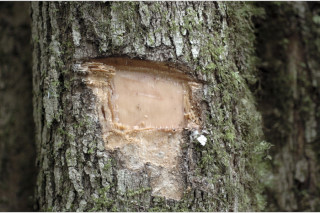
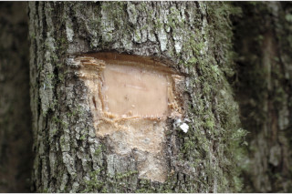
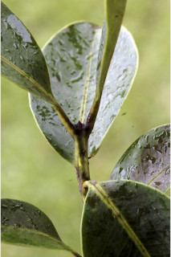
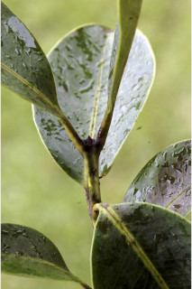
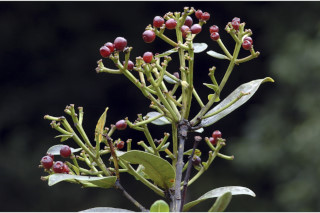
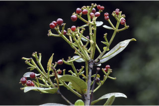

Trees up to 15 m tall.
15 ಮೀ. ಎತ್ತರದವರೆಗೆ ಬೆಳೆಯುವ ಮರಗಳು.
Trees up to 15 m tall.
மரங்கள் 15 மீ. உயரம் வரை வளரக்கூடியது.
Bark grey, scaly; blaze cream.
ತೊಗಟೆ, ಬೂದು ಬಣ್ಣದಲ್ಲಿದ್ದು ಶಲ್ಕಾರೂಪದಲ್ಲಿರುತ್ತದೆ.
Bark grey, scaly; blaze cream.
மரத்தின் பட்டை சாம்பல் நிறமானது, செதில்களுடையது; உள்பட்டை கிரீம் நிறமானது.
Branchlets stout, quadrangular and narrowly winged, glabrous.
ಕಿರುಕೊಂಬೆಗಳು ದೃಢವಾಗಿದ್ದು, 4-ಕೋನಯುಕ್ತವಾಗಿರುತ್ತದೆ ಮತ್ತು ಸಂಕುಚಿತವಾದ ರೆಕ್ಕೆ ಸಮೇತವಿರುತ್ತವೆ ಹಾಗೂ ರೋಮರಹಿತವಾಗಿರುತ್ತದೆ.
Branchlets stout, quadrangular and narrowly winged, glabrous.
சிறியநுனிக்கிளைகள் தடித்தவை மற்றும் குறுக்குவெட்டுத் தோற்றத்தில் கோணங்களுடையதுமற்றும் குறுகிய சிறகு போன்ற அமைப்புடையது, உரோமங்களற்றது.
Leaves simple, opposite, decussate; petiole 0.4-1.2 cm long, canaliculate above, glabrous; lamina 6.5-12.5 x 3.3-7.5 cm, elliptic to broad elliptic or obovate, apex obtuse to rounded; base cuneate, margin entire, pellucid gland dotted, coriaceous, glabrous; midrib distinctly canaliculate above; intramarginal nerve present; secondary_nerves ca. 12 pairs; tertiary_nerves obscure.
ಎಲೆಗಳು ಸರಳವಾಗಿದ್ದು ಅಭಿಮುಖವಾಗಿ ಜೋಡನೆಗೊಂಡಿದ್ದು ಕಾಂಡದ ಎರಡೂ ಕಡೆ ಎದುರು ಬದರಿನ ಲಂಬ ಸಾಲಿನಲ್ಲಿರುತ್ತವೆ;ತೊಟ್ಟುಗಳು 0.4-1.2 ಸೆಂ.ಮೀ. ಉದ್ದಹೊಂದಿದ್ದು ಮೇಲ್ಭಾಗದಲ್ಲಿ ಕಾಲುವೆ ಸಮೇತವಿದ್ದು ರೋಮರಹಿತವಾಗಿರುತ್ತವೆ;ಪತ್ರಗಳು 6.5 – 12.5 X3.3-7.5 ಸೆಂ.ಮೀ.ವರೆಗಿನ ಗಾತ್ರವಿದ್ದು ಅಂಡವೃತ್ತದಿಂದ ವಿಶಾಲಅಂಡವೃತ್ತ ಅಥವಾ ಬುಗುರಿಯ ಆಕಾರ,ಚೂಪಲ್ಲರೀತಿಯಿಂದ ಹಿಡಿದು ದುಂಡಾಗಿರುವರೆಗಿನ ತುದಿ,ಬೆಣೆಯಾಕಾರದ ಬುಡ,ನಯವಾದ ಅಂಚು, ಪ್ರಕಾಶ ಭೇಧ್ಯ ರಸಗ್ರಂಥಿ ಚುಕ್ಕೆಗಳ ಸಮೇತವಿರುತ್ತವೆ ಮತ್ತು ತೊಗಲನ್ನೋಲುವ ಮೇಲ್ಮೈ ಹೊಂದಿದ್ದು ರೋಮರಹಿತವಾಗಿರುತ್ತವೆ ಮತ್ತು; ಮಧ್ಯ ನಾಳ ಮೇಲ್ಭಾಗದಲ್ಲಿ ಎದ್ದು ಕಾಣುವ ಕಾಲುವೆಗೆರೆಯ ಸಮೇತವಿರುತ್ತದೆ;ಅಂತರ ಅಂಚಿನ ನಾಳಗಳು ಇರುತ್ತವೆ;ಎರಡನೇ ದರ್ಜೆಯ ನಾಳಗಳು ಅಂದಾಜು 12 ಜೋಡಿಗಳಿರುತ್ತವೆ;ಮೂರನೇ ದರ್ಜೆಯ ನಾಳಗಳು ಅಸ್ಪಷ್ಟವಾಗಿರುತ್ತವೆ.
Leaves simple, opposite, decussate; petiole 0.4-1.2 cm long, canaliculate above, glabrous; lamina 6.5-12.5 x 3.3-7.5 cm, elliptic to broad elliptic or obovate, apex obtuse to rounded; base cuneate, margin entire, pellucid gland dotted, coriaceous, glabrous; midrib distinctly canaliculate above; intramarginal nerve present; secondary_nerves ca. 12 pairs; tertiary_nerves obscure.
இலைகள் தனித்தவை, எதிரடுக்கமானவை, குறுக்குமறுக்கானவை; இலைக்காம்பு 0.4-1.2 செ.மீ. நீளமானது, குறுக்குவெட்டுத் தோற்றத்தில் கேனாலிகுலேட், உரோமங்களற்றது; இலை அலகு 6.5-12.5 X 3.3-7.5 செ.மீ., நீள்வட்ட வடிவானது முதல் அகன்ற நீள்வட்ட வடிவானது அல்லது தலைகீழ் முட்டை வடிவானது, அலகின் நுனி மெட்டையானது முதல் வட்டமானது; அலகின் தளம் ஆப்பு வடிவானது, அலகின் விளிம்பு முழுமையானது, ஒளிபுகும் சுரப்பி புள்ளிகளுடையது, கோரியேசியஸ், உரோமங்களற்றது; மையநரம்பு மேற்புறத்தில் அலகின் பரப்பைவிட பள்ளமானது; விளிம்பு நரம்பு (இண்ட்ராமார்ஜினல் நரம்பு) கொண்டது; இரண்டாம் நிலை நரம்புகள் 12 ஜோடிகள்; மூன்றாம் நிலை நரம்புகள் கண்களுக்கு புலப்படாது.
Flowers small in terminal corymbose cyme.
ಹೂಗಳು ಚಿಕ್ಕ ಗಾತ್ರದವುಗಳಾಗಿದ್ದು ತುದಿಯಲ್ಲಿನ ನೀಳಛತ್ರ ಮಧ್ಯಾರಂಭಿ ಪುಷ್ಪಮಂಜರಿಯಲ್ಲಿರುತ್ತವೆ.
Flowers small in terminal corymbose cyme.
மலர்கள் சிறியவை, மஞ்சரி தண்டின் நுனியில் காணப்படும் கோரியம்போஸ் சைம் வகை மஞ்சரி.
Berry, globose, purple, 0.8 cm across, crowned with persistent calyx; seed one.
ಬೆರ್ರಿ ಫಲಗಳು ಗೋಳಾಕಾರದಲ್ಲಿದ್ದು, ಕೆನ್ನೀಲಿ ಬಣ್ಣ ಹೊಂದಿದ್ದು 0.8 ಸೆಂ.ಮೀ. ಅಡ್ಡಗಲತೆಯನ್ನು ಹೊಂದಿರುತ್ತವೆ,ಮುಕುಟದಲ್ಲಿ ಶಾಶ್ವತವಾದ ಪುಷ್ಪ ಪಾತ್ರೆಯನ್ನು ಹೊಂದಿರುತ್ತವೆಬೀಜದ ಸಂಖ್ಯೆ ಒಂದು..
Berry, globose, purple, 0.8 cm across, crowned with persistent calyx; seed one.
முழுச்சதைகனி (பெர்ரி), கோளவடிவானது, பர்புள் நிறமானது, 0.8 செ.மீ. குறுக்களவுடையது, நிரந்தரமான புல்லி இதழ்களுடையவை; ஒரு விதையுள்ள கனி.
 


 



 
